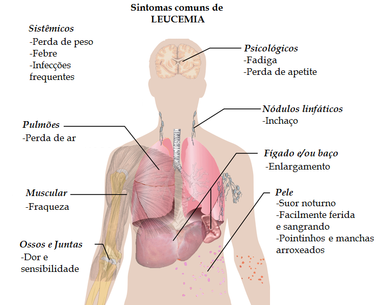

Os sintomas da leucemia podem variar dependendo do tipo e estágio da doença, mas geralmente incluem:
Fadiga excessiva
Palidez
Sangramentos frequentes ou hematomas inexplicáveis
Infecções frequentes
Perda de peso sem motivo aparente
Febre recorrente
Inchaço dos gânglios linfáticos, baço ou fígado
Dores ósseas ou articulares

Sintomas
Tratamento
O tratamento para leucemia depende do tipo específico da doença, do estágio em que foi diagnosticada, da idade e da saúde geral do paciente. As opções de tratamento podem incluir:
Quimioterapia
Terapia alvo
Transplante de células-tronco (transplante de medula óssea)
Radioterapia
Imunoterapia
tratamento
Prevenção
Não há medidas conhecidas para prevenir a leucemia completamente, pois suas causas exatas ainda não são completamente compreendidas. No entanto, algumas práticas que podem ajudar a reduzir o risco incluem:
Avoid exposição a produtos químicos tóxicos
Evitar exposição excessiva à radiação ionizante
Parar de fumar
Manter um estilo de vida saudável com uma dieta balanceada e exercícios regulares
Informações Importantes
É importante estar ciente dos seguintes pontos sobre leucemia:
A leucemia pode afetar pessoas de todas as idades, mas é mais comum em adultos mais velhos e crianças.
O diagnóstico precoce e o tratamento adequado podem melhorar significativamente as chances de remissão e cura.
A leucemia pode ser classificada em diferentes tipos, como leucemia mieloide aguda (LMA), leucemia mieloide crônica (LMC), leucemia linfoblástica aguda (LLA) e leucemia linfocítica crônica (LLC).
Os sintomas da leucemia podem ser confundidos com outras condições de saúde, por isso é importante consultar um médico para um diagnóstico correto.
Riscos
Os riscos associados à leucemia incluem:
Complicações devido à supressão da produção normal de células sanguíneas na medula óssea.
Riscos aumentados de infecções devido à diminuição dos glóbulos brancos normais.
Anemia devido à diminuição dos glóbulos vermelhos.
Riscos relacionados aos tratamentos, como efeitos colaterais da quimioterapia, radioterapia ou transplante de medula óssea.
2024 Informações sobre Leucemia. Criadores: Abraão Santos Barros e Matheus Gabriel Dos Santos Neumann.